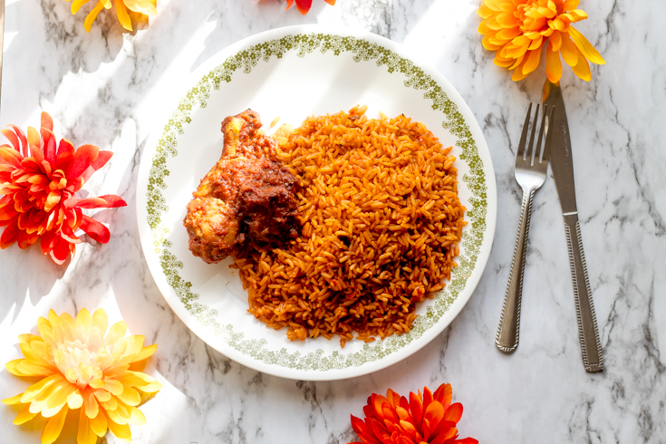

Jellof-rice Recipe(West African)

jellof-rice image
jellof-rice is a very popular west african dish which is enjoyed by all and sundry
in Nigeria it is a first choice menue in weddings and other events
Prep time: 20min Cook time:1hrs Servings:8
Ingridents
2 (14.5 ounce) cans stewed tomatoes
½ (6 ounce) can tomato paste
¼ teaspoon cayenne pepper
½ teaspoon red pepper flakes
1 tablespoon Worcestershire sauce
1 teaspoon chopped fresh rosemary
1 (3 pound) whole chicken, cut into 8 pieces
1 cup uncooked white rice
½ pound fresh green beans, trimmed and snapped into 1 to 2 inch pieces
Steps
step 1:Pour oil into large saucepan. Cook onion in oil over medium-low heat until translucent.
step 2: Stir in stewed tomatoes and tomato paste, and season with salt, black pepper, cayenne pepper, red pepper flakes, Worcestershire sauce and rosemary. Cover, and bring to a boil. Reduce heat, stir in water, and add chicken pieces. Simmer for 30 minutes.
step 3:Stir in rice, carrots, and green beans, and season with nutmeg. Bring to a boil, then reduce heat to low. Cover, and simmer until the chicken is fork-tender and the rice is cooked, 25 to 30 minutes.